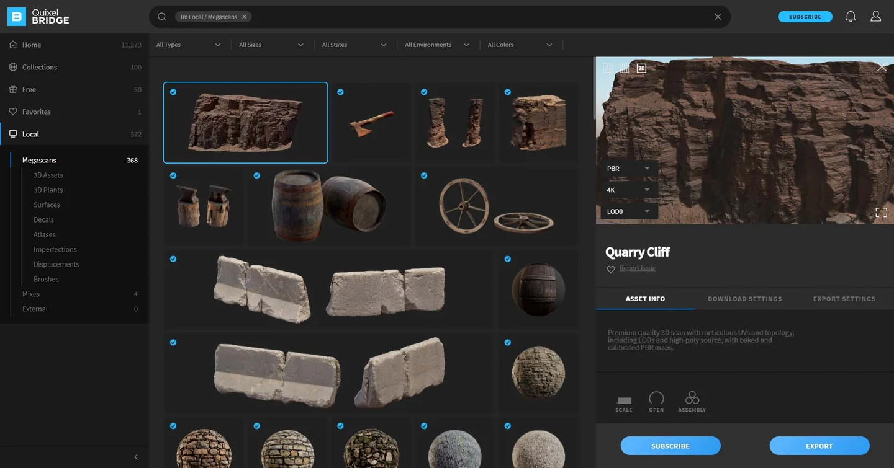

Epic Games2021 – 2022
Quixel Bridge
Contributed to the launch of Bridge, a desktop app sitting on top of the Megascans marketplace offering asset browsing, purchasing, downloading, and one-click integration with game engines and 3D software. Built stakeholder-facing analytics dashboards and owned end-to-end feature delivery across design, engineering, and executive stakeholders.
- +46%subscriptions
- +33%MAU
- −40%manual reporting